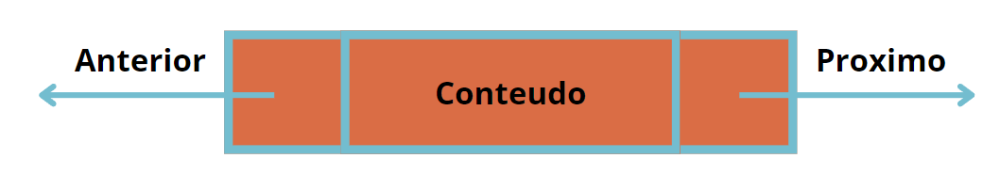
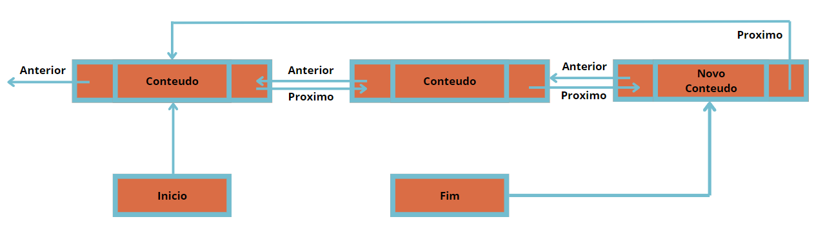

Listas Duplamente Encadeadas
O que é uma Lista Duplamente Encadeada?
Imagine que você tem uma fila de amigos, mas desta vez, cada amigo está segurando a mão do amigo à sua frente e também do amigo atrás dele. Esta é uma maneira fácil de pensar em uma lista duplamente encadeada. Cada amigo é um "nó" na lista, e as mãos que eles estão segurando são as "ligações" para o próximo e o anterior nó.
As listas duplamente encadeadas são importantes na programação porque oferecem mais flexibilidade do que as listas simplesmente encadeadas. Elas permitem que você navegue tanto para frente quanto para trás na lista, facilitando a inserção e remoção de elementos em qualquer posição. Elas são usadas em diversas aplicações, como na implementação de navegadores (para manter o histórico de navegação), em sistemas de gerenciamento de memória, e em muitas outras situações onde o acesso bidirecional é necessário.
Como Funciona?
Vamos ver como essa fila de amigos funciona e como você pode brincar com ela. Vamos explorar algumas operações básicas que você pode realizar em uma lista duplamente encadeada.

Celula de lista Dupla
Essa é uma celula de exemplo de Lista duplamente encadeada
Adicionando um Amigo ao Final
Quando você quer adicionar um novo amigo ao final da fila, você pede ao último amigo que segure a mão do novo amigo. O novo amigo então segura a mão do último amigo e agora eles são amigos!
// Exemplo em C#
public class No {
public int Valor;
public No Proximo;
public No Anterior;
public No(int valor) {
Valor = valor;
Proximo = null;
Anterior = null;
}
}
public class ListaDuplamenteEncadeada {
private No primeiro;
private No ultimo;
public ListaDuplamenteEncadeada() {
primeiro = null;
ultimo = null;
}
public void AdicionarAmigoAoFinal(int valor) {
No novoNo = new No(valor);
if (primeiro == null) {
primeiro = novoNo;
ultimo = novoNo;
} else {
ultimo.Proximo = novoNo;
novoNo.Anterior = ultimo;
ultimo = novoNo;
}
}
}
Explicações
o proximo do ultimo conteudo recebe o novo conteudo o "fim" recebe o novo conteudo e o proximo do novo conteudo recebe o primeiro conteudo
Adicionando um Amigo ao Início
Quando você quer adicionar um novo amigo ao início da fila, o novo amigo segura a mão do primeiro amigo, e agora ele é o primeiro da fila!
// Exemplo em C#
public class ListaDuplamenteEncadeada {
private No primeiro;
private No ultimo;
public ListaDuplamenteEncadeada() {
primeiro = null;
ultimo = null;
}
public void AdicionarAmigoAoInicio(int valor) {
No novoNo = new No(valor);
if (primeiro == null) {
primeiro = novoNo;
ultimo = novoNo;
} else {
novoNo.Proximo = primeiro;
primeiro.Anterior = novoNo;
primeiro = novoNo;
}
}
}
Adicionando um Amigo no Meio
Quando você quer adicionar um novo amigo no meio da fila, você pede ao amigo que está no meio para segurar a mão do novo amigo, e o novo amigo segura a mão do próximo amigo. Agora, ele está no meio da fila!
// Exemplo em C#
public class ListaDuplamenteEncadeada {
private No primeiro;
private No ultimo;
public ListaDuplamenteEncadeada() {
primeiro = null;
ultimo = null;
}
public void AdicionarAmigoNoMeio(int valor, int posicao) {
No novoNo = new No(valor);
if (posicao == 0) {
AdicionarAmigoAoInicio(valor);
} else {
No atual = primeiro;
for (int i = 0; i < posicao - 1 && atual != null; i++) {
atual = atual.Proximo;
}
if (atual != null && atual.Proximo != null) {
novoNo.Proximo = atual.Proximo;
novoNo.Anterior = atual;
atual.Proximo.Anterior = novoNo;
atual.Proximo = novoNo;
} else if (atual == ultimo) {
AdicionarAmigoAoFinal(valor);
} else {
throw new ArgumentOutOfRangeException("Posição inválida!");
}
}
}
}
Brincando com a Fila
Se você quiser saber quem é o primeiro amigo na fila, você simplesmente pergunta ao amigo que está na frente. E se quiser saber quem vem depois, ou antes, é só perguntar a cada amigo quem eles estão segurando a mão.
// Exemplo em C#
public class ListaDuplamenteEncadeada {
private No primeiro;
private No ultimo;
public No VerPrimeiroAmigo() {
return primeiro;
}
public No VerUltimoAmigo() {
return ultimo;
}
public No VerProximoAmigo(No atualAmigo) {
return atualAmigo?.Proximo;
}
public No VerAmigoAnterior(No atualAmigo) {
return atualAmigo?.Anterior;
}
}